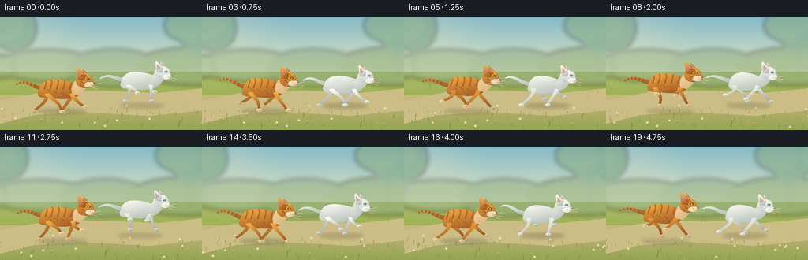
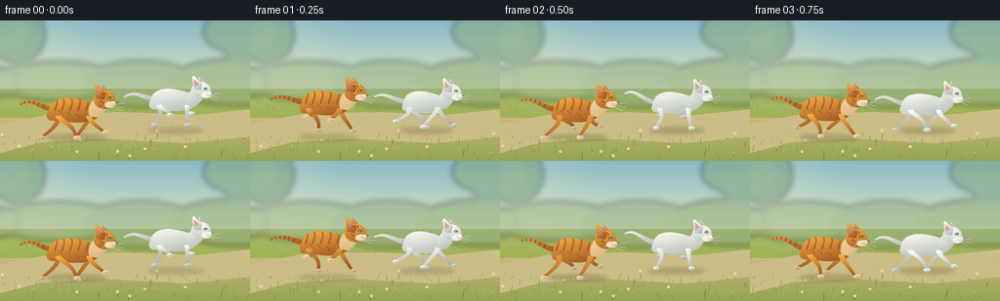

CODING AGENTS AS PIXEL WORLD MODELS
traex/GPT-6.1-Sol · instance_preservation_0004
点击播放 · 原生 RGB 像素
此结果可播放，但该运行尚未通过最终提交审核。页面展示不代表评测通过。
逐轮保存的候选
回放视频、检查图与代码变化。
每份候选均可单独播放。实际图片检查记录在下方工具轨迹中。
候选 01播放与检查图
点击播放 · 原生 RGB 像素


展开代码变化
--- 上一保存版本
+++ 本次保存版本
@@ -0,0 +1,278 @@
+from pathlib import Path
+import json, math
+import numpy as np
+from PIL import Image, ImageDraw, ImageFilter
+import artifact_io
+
+ROOT = Path(__file__).resolve().parent
+SPEC = json.loads((ROOT/'task_spec.json').read_text())
+W,H = SPEC['width'],SPEC['height']
+S=4
+rng = np.random.default_rng(183)
+
+def mix(a,b,t): return tuple(round(x*(1-t)+y*t) for x,y in zip(a,b))
+def bezier(points,n=55):
+ p=np.array(points,float)
+ t=np.linspace(0,1,n)[:,None]
+ if len(p)==4:
+ q=(1-t)**3*p[0]+3*(1-t)**2*t*p[1]+3*(1-t)*t*t*p[2]+t**3*p[3]
+ elif len(p)==3:
+ q=(1-t)**2*p[0]+2*(1-t)*t*p[1]+t*t*p[2]
+ return [tuple(x) for x in q]
+def scalepts(points): return [(int(x*S),int(y*S)) for x,y in points]
+def poly(d,pts,color): d.polygon(scalepts(pts),fill=color)
+def line(d,pts,color,width): d.line(scalepts(pts),fill=color,width=max(1,round(width*S)),joint='curve')
+def ellipse(d,box,color): d.ellipse(tuple(round(v*S) for v in box),fill=color)
+def curve(d,ps,col,w): line(d,bezier(ps),col,w)
+
+# Fixed seeds and world positions keep fine detail temporally coherent.
+grass=[]
+for _ in range(470):
+ grass.append((rng.uniform(-30,640),rng.uniform(88,154),rng.uniform(1.5,6.8),rng.uniform(-2,2),rng.random()))
+flowers=[(rng.uniform(-30,630),rng.uniform(102,143),rng.uniform(2,6),rng.random()) for i in range(90)]
+furSeeds=np.random.default_rng(924).random((1500,4))
+YY,XX=np.mgrid[0:H*S,0:W*S]/S
+
+def background(t):
+ # softly graded summer sky and sunlit running path.
+ a=np.zeros((H*S,W*S,3),float)
+ for y in range(H*S):
+ yy=y/S
+ if yy<70: col=mix((135,185,200),(226,232,194),min(1,yy/72))
+ elif yy<100: col=mix((168,187,107),(159,178,84),(yy-70)/30)
+ else: col=mix((200,184,126),(148,163,82),(yy-100)/44)
+ a[y,:,:]=col
+ # sun glow
+ glow=np.exp(-((XX-36)**2/2000+(YY-22)**2/2000))[:,:,None]
+ a=a*(1-.18*glow)+np.array((255,239,189))*.18*glow
+ im=Image.fromarray(np.uint8(np.clip(a,0,255)))
+ far=Image.new('RGBA',im.size,(0,0,0,0));d=ImageDraw.Draw(far)
+ off=t*4
+ for x,y,rx,ry,c in [(-15,63,46,16,(146,172,132,160)),(60,62,64,20,(156,180,138,140)),(144,65,59,24,(139,167,126,130)),(245,63,74,24,(144,171,123,150))]:
+ ellipse(d,(x-off-rx,y-ry,x-off+rx,y+ry),c)
+ # distant tree trunks and small foliage silhouettes
+ for x in [-25,18,252,310]:
+ x-=off
+ line(d,[(x,73),(x-2,10)],(116,137,112,100),3)
+ ellipse(d,(x-28,-15,x+28,44),(116,157,119,130))
+ ellipse(d,(x-44,-8,x+12,31),(132,165,121,130))
+ far=far.filter(ImageFilter.GaussianBlur(3*S));im=Image.alpha_composite(im.convert('RGBA'),far)
+ d=ImageDraw.Draw(im)
+ # Pale sinuous sand track through the grass.
+ poly(d,[(0,106),(58,95),(132,94),(199,97),(256,91),(256,119),(189,126),(104,121),(42,125),(0,136)],(204,189,135,255))
+ ground=Image.new('RGBA',im.size,(0,0,0,0));g=ImageDraw.Draw(ground)
+ offset=t*34
+ for x,y,h,lean,k in grass:
+ x=(x-offset+32)%650-32
+ if x>260:continue
+ # keep center path visually clean
+ if 98<y<119 and k<.7:continue
+ col=mix((112,139,60),(188,188,94),k)+(210,)
+ line(g,[(x,y),(x+lean*.5,y-h*.6),(x+lean,y-h)],col,.55 if y<120 else .75)
+ for x,y,h,k in flowers:
+ x=(x-offset+32)%650-32
+ if x>260 or 98<y<118:continue
+ line(g,[(x,y),(x-.5,y-h)],(116,144,68,190),.45)
+ cx=x-.5;cy=y-h
+ if k<.58:
+ for dx,dy in [(-.8,0),(.8,0),(0,-.8),(0,.8)]: ellipse(g,(cx+dx-.65,cy+dy-.65,cx+dx+.65,cy+dy+.65),(245,239,197,235))
+ ellipse(g,(cx-.4,cy-.4,cx+.4,cy+.4),(225,174,63,255))
+ else: ellipse(g,(cx-.9,cy-.7,cx+.9,cy+.7),(213,185,104,200))
+ im=Image.alpha_composite(im,ground)
+ return im
+
+class Cat:
+ def __init__(self,white=False):
+ self.white=white
+ self.base=(242,238,224) if white else (216,123,42)
+ self.hi=(255,254,243) if white else (247,176,70)
+ self.sh=(161,173,169) if white else (138,66,26)
+ self.edge=(112,129,130) if white else (124,69,34)
+ def render(self,im,x,y,phase,sc=1):
+ # Coordinates in cat space, with a supple body over independently articulated legs.
+ ss=sc
+ stretch=1+.065*math.cos(phase)
+ lift=max(0,math.sin(phase)) * 5.2
+ bob=-lift+1.1*math.cos(phase*2)
+ def T(p):return (x+p[0]*ss,y+(p[1]+bob)*ss)
+ def pts(ps):return [T(p) for p in ps]
+ def shape(maskpoints,bb,color=None,hairs=True,far=False):
+ nonlocal im
+ m=Image.new('L',im.size,0);md=ImageDraw.Draw(m)
+ poly(md,pts(maskpoints),255)
+ xmin,ymin,xmax,ymax=bb
+ X=(XX-x)/ss;Y=(YY-y)/ss-bob
+ # Golden upper-left key light and cool shade towards the underside.
+ height=max(1,ymax-ymin)
+ v=np.clip((Y-ymin)/height,0,1)
+ light=np.clip(.26+.65*(1-v)+.10*np.cos((X-xmin)/max(xmax-xmin,1)*math.pi),0,1)
+ lo=np.array(self.sh if color is None else mix(color,self.sh,.3))
+ hi=np.array(self.hi if color is None else mix(color,(255,253,226),.23))
+ rgb=lo[None,None,:]*(1-light[:,:,None])+hi[None,None,:]*light[:,:,None]
+ # Very fine stable fur granularity.
+ grain=np.sin(X*6.5+Y*4.3)*np.sin(Y*9.1-X*1.2)*1.5
+ rgb+=grain[:,:,None]
+ if far:rgb*=.90
+ patch=Image.fromarray(np.uint8(np.clip(rgb,0,255)),'RGB').convert('RGBA');patch.putalpha(m)
+ im=Image.alpha_composite(im,patch)
+ if hairs:
+ f=Image.new('RGBA',im.size,(0,0,0,0));fd=ImageDraw.Draw(f)
+ area=(xmax-xmin)*(ymax-ymin)
+ for u,vv,w,z in furSeeds[:min(800,int(area*1.1))]:
+ px=xmin+u*(xmax-xmin);py=ymin+vv*(ymax-ymin)
+ tx,ty=T((px,py))
+ ix,iy=int(tx*S),int(ty*S)
+ if 0<=ix<W*S and 0<=iy<H*S and m.getpixel((ix,iy))>200:
+ col=self.hi+(int(15+z*35),) if w<.6 else self.sh+(20,)
+ line(fd,pts([(px,py),(px-.5-w*.7,py+.12)]),col,.22)
+ im=Image.alpha_composite(im,f)
+ return m
+ def ell(cx,cy,rx,ry,color=None,far=False,hairs=True):
+ ps=[(cx+rx*math.cos(th),cy+ry*math.sin(th)) for th in np.linspace(0,2*math.pi,90)]
+ return shape(ps,(cx-rx,cy-ry,cx+rx,cy+ry),color,hairs,far)
+ def stroke(ps,width,color):
+ d=ImageDraw.Draw(im);curve(d,pts(ps),color,width*ss)
+ def limb(hip,knee,paw,far=False):
+ # Rounded tapered articulated limbs with soft individual toes.
+ ps=bezier([hip,(hip[0],hip[1]+4),knee,paw],35)
+ widths=np.linspace(5.7,2.5,len(ps))
+ for i in range(len(ps)-1):
+ a,b=ps[i],ps[i+1];dx,dy=b[0]-a[0],b[1]-a[1];norm=math.hypot(dx,dy)+1e-6
+ wx,wy=-dy/norm*widths[i]/2,dx/norm*widths[i]/2
+ # shape geometry accumulated below
+ left=[];right=[]
+ for i,p in enumerate(ps):
+ a=ps[max(0,i-1)];b=ps[min(len(ps)-1,i+1)];dx,dy=b[0]-a[0],b[1]-a[1];norm=math.hypot(dx,dy)+1e-6
+ wx,wy=-dy/norm*widths[i]/2,dx/norm*widths[i]/2
+ left.append((p[0]+wx,p[1]+wy));right.append((p[0]-wx,p[1]-wy))
+ q=left+right[::-1]
+ shape(q,(min(p[0] for p in q),min(p[1] for p in q),max(p[0] for p in q),max(p[1] for p in q)),hairs=False,far=far)
+ ell(paw[0]+1,paw[1],3.4,2.05,color=(242,216,157) if not self.white else None,far=far,hairs=False)
+ d=ImageDraw.Draw(im)
+ for k in [0,1.2]:line(d,pts([(paw[0]+k+1,paw[1]-.3),(paw[0]+k+1.3,paw[1]+1.05)]),self.edge+(110,),.3*ss)
+ # limbs take turns reaching forward, driving backwards, and folding under the belly.
+ def leg(front,p,far=False):
+ hx=12 if front else -19
+ hy=-12 if front else -12
+ c=math.cos(p);si=math.sin(p)
+ if front:
+ paw=(hx+17*c,10-max(0,si)*13)
+ knee=(hx+7*c-3*max(0,si),-1-max(0,si)*4)
+ else:
+ paw=(hx+18*c,10-max(0,si)*14)
+ knee=(hx+9+8*c,-3-max(0,si)*3)
+ limb((hx,hy),knee,paw,far)
+ leg(False,phase+math.pi+.35,True)
+ leg(True,phase+math.pi+.65,True)
+ # A long, lifted feline tail: curved and tapered, not a fox plume.
+ tail=bezier([(-23,-18),(-38,-20),(-45,-31+3*math.sin(phase)),(-57,-24+4*math.sin(phase+.3))],70)
+ widths=np.linspace(5.6,1.5,len(tail))
+ l=[];r=[]
+ for i,p in enumerate(tail):
+ a=tail[max(0,i-1)];b=tail[min(len(tail)-1,i+1)];dx,dy=b[0]-a[0],b[1]-a[1];norm=math.hypot(dx,dy)+1e-6
+ wx,wy=-dy/norm*widths[i]/2,dx/norm*widths[i]/2;l.append((p[0]+wx,p[1]+wy));r.append((p[0]-wx,p[1]-wy))
+ mask=shape(l+r[::-1],(-58,-38,-20,-14),hairs=True)
+ if not self.white:
+ ov=Image.new('RGBA',im.size,(0,0,0,0));d=ImageDraw.Draw(ov)
+ for idx in [19,29,39,49,59,67]:
+ p=tail[idx];a=tail[max(0,idx-1)];b=tail[min(len(tail)-1,idx+1)];dx,dy=b[0]-a[0],b[1]-a[1];norm=math.hypot(dx,dy)
+ q=[(p[0]-dy/norm*4,p[1]+dx/norm*4),(p[0]+dy/norm*4,p[1]-dx/norm*4)]
+ line(d,pts(q),(137,72,33,160),1.8*ss)
+ ov.putalpha(Image.fromarray(np.minimum(np.array(ov.getchannel('A')),np.array(mask)).astype(np.uint8)))
+ im=Image.alpha_composite(im,ov)
+ # Back and belly profile: broad haunches, long low back, chest at the shoulder.
+ top=bezier([(-27,-17),(-24,-32),(-6,-32),(14,-25)],40)
+ front=bezier([(14,-25),(25,-20),(23,-8),(12,-7)],24)
+ bottom=bezier([(12,-7),(0,-3),(-13,-7),(-22,-7)],35)
+ back=bezier([(-22,-7),(-28,-7),(-30,-11),(-27,-17)],18)
+ body=[(px*stretch,py) for px,py in top+front+bottom+back]
+ mask=shape(body,(-30,-32,26,-4))
+ if not self.white:
+ ov=Image.new('RGBA',im.size,(0,0,0,0));d=ImageDraw.Draw(ov)
+ for bx in [-21,-14,-6,2,10]:
+ curve(d,pts([(bx,-29),(bx+3,-25),(bx-1,-20),(bx-1,-17)]),(148,78,33,170),1.8*ss)
+ curve(d,pts([(bx-.3,-28),(bx+1.6,-26),(bx+1,-23),(bx+.7,-21)]),(161,82,28,110),.6*ss)
+ # graceful short stripes on flank
+ for bx,by in [(-17,-15),(-9,-14),(0,-12)]:
+ curve(d,pts([(bx-2,by-2),(bx,by-1),(bx+2,by),(bx+2,by+2)]),(150,77,32,125),1.2*ss)
+ ov.putalpha(Image.fromarray(np.minimum(np.array(ov.getchannel('A')),np.array(mask)).astype(np.uint8)))
+ im=Image.alpha_composite(im,ov)
+ # Visible legs in front of the torso.
+ leg(False,phase)
+ leg(True,phase+.45)
+ # Neck, arched forward with the momentum of the run.
+ neck=bezier([(12,-12),(9,-25),(21,-35),(27,-29)],30)+bezier([(27,-29),(33,-24),(29,-16),(20,-10)],28)
+ shape(neck,(9,-35,32,-10),color=(246,215,156) if not self.white else None)
+ # far ear, then head. Cat ears are small pointed triangles set well apart.
+ shape([(24,-30),(25,-43),(32,-35),(32,-27)],(24,-43,32,-27),hairs=False,far=True)
+ shape([(25.7,-38.8),(26.2,-41),(30,-35)],(25,-41,31,-35),color=(200,142,131) if self.white else (197,119,87),hairs=False)
+ ell(27,-28,10.5,9.1)
+ # Forehead / small sloped nose, with rounded feline muzzle rather than a long snout.
+ face=bezier([(29,-35),(35,-34),(36,-29),(37,-27)],24)+bezier([(37,-27),(42,-26),(40,-21),(35,-20)],24)+bezier([(35,-20),(30,-17),(23,-22),(25,-28)],24)
+ shape(face,(23,-35,41,-18),hairs=True)
+ # near ear curved triangle, rim light, and velvety inner pink.
+ shape([(19,-29),(17.5,-42),(19,-44),(28,-35),(27,-28)],(17,-44,28,-28),hairs=False)
+ shape([(20,-32),(19.5,-40.5),(24.9,-35)],(19,-41,25,-32),color=(214,150,144) if self.white else (205,124,101),hairs=False)
+ stroke([(18.8,-42),(20,-40),(23,-38),(25.5,-35)],.5,self.hi+(220,))
+ # Cheek and cream whisker pads.
+ ell(32.6,-22.8,5.2,3.2,color=(251,238,203) if not self.white else (253,250,239),hairs=True)
+ ell(36,-23.8,3.3,2.4,color=(253,234,189) if not self.white else (252,249,238),hairs=False)
+ d=ImageDraw.Draw(im)
+ # Prominent bright feline eye with dark almond rim and slit pupil.
+ eye=[(29.4,-29.4),(31.2,-31.3),(33.5,-30.6),(34.4,-29.5),(32.2,-28.2),(30.3,-28.6)]
+ poly(d,pts(eye),self.edge+(255,))
+ ellipse(d,tuple([T((30.7,-30.5))[0],T((30.7,-30.5))[1],T((33.3,-28.4))[0],T((33.3,-28.4))[1]]),(123,186,184,255) if self.white else (150,178,67,255))
+ line(d,pts([(32.4,-30.5),(32.6,-28.6)]),(35,48,41,255),.65*ss)
+ ellipse(d,(*T((31.4,-30.5)),*T((32.05,-29.9))),(255,255,245,255))
+ # Nose leather, mouth, whisker follicles.
+ poly(d,pts([(38.2,-25.7),(40.5,-25.2),(38.9,-23.7)]),(173,113,108,255) if self.white else (154,88,74,255))
+ line(d,pts([(38.9,-23.7),(38.3,-22.6),(35.8,-21.6)]),(97,77,67,200),.45*ss)
+ for px,py in [(34,-22.5),(35.5,-23.4),(33.1,-24),(34.9,-21.5)]:
+ ellipse(d,(*T((px-.18,py-.18)),*T((px+.18,py+.18))),self.edge+(180,))
+ # very fine tapering whiskers extend ahead and below the muzzle.
+ for ps in [[(34,-23),(39,-23),(44,-24),(47,-25)],[(34,-22),(40,-21),(45,-20),(47,-20)],[(33,-22),(37,-20),(40,-18),(44,-17)],[(33,-23),(28,-22),(26,-20),(24,-20)]]:
+ curve(d,pts(ps),(254,249,228,205),.35*ss)
+ if not self.white:
+ for ps in [[(24,-35),(27,-34),(28,-33),(28,-31)],[(28,-35),(30,-34),(30,-33),(30,-32)],[(23,-27),(25,-26),(26,-25),(26,-24)]]:
+ curve(d,pts(ps),(150,81,36,205),.9*ss)
+ # cheek contour fluff: just a few short bright fur tips.
+ for px,py in [(19,-24),(21,-22),(22,-21),(25,-20)]:
+ line(d,pts([(px,py),(px-1.2,py+.35)]),self.hi+(190,),.3*ss)
+ return im
+
+orange=Cat(False);white=Cat(True)
+frames=[]
+for i in range(SPEC['frames']):
+ t=i/SPEC['fps']
+ im=background(t)
+ # The tracking camera preserves both animals in frame; terrain moves beneath them.
+ phase=2*math.pi*(1.12*t)
+ x1=79+3*math.sin(t*1.0);x2=179+3*math.sin(t*1.0+.5)
+ y1=109;y2=102
+ # Ground contact shadows grow softer during suspension.
+ sh=Image.new('RGBA',im.size,(0,0,0,0));d=ImageDraw.Draw(sh)
+ for x,y,p,s in [(x1,y1,phase,1),(x2,y2,phase+.9,.93)]:
+ lift=max(0,math.sin(p))*5
+ ellipse(d,(x-31*s,y+8,x+30*s,y+14),(88,78,39,70-int(lift*4)))
+ sh=sh.filter(ImageFilter.GaussianBlur(2.0*S));im=Image.alpha_composite(im,sh)
+ # small warm dust motes behind the feet, kept low and subtle.
+ dust=Image.new('RGBA',im.size,(0,0,0,0));dd=ImageDraw.Draw(dust)
+ for cx,cy,p in [(x1,y1,phase),(x2,y2,phase+.9)]:
+ for k in range(8):
+ age=(t*.95+k*.137)%1
+ dx=cx-19-18*age;dy=cy+8-4*age-1.7*math.sin(k*3)
+ r=.4+1.3*age
+ ellipse(dd,(dx-r,dy-r,dx+r,dy+r),(234,215,166,int((1-age)*37)))
+ dust=dust.filter(ImageFilter.GaussianBlur(.45*S));im=Image.alpha_composite(im,dust)
+ im=white.render(im,x2,y2,phase+.9,.94)
+ im=orange.render(im,x1,y1,phase,1.03)
+ # foreground blades give subtle depth without hiding the cats.
+ d=ImageDraw.Draw(im)
+ for gx,gy,gh,lean,k in grass[:110]:
+ gx=(gx-t*34+32)%650-32
+ if gy>136 and gx<258:
+ line(d,[(gx,gy+3),(gx+lean,gy-gh)],mix((107,133,62),(155,162,76),k)+(255,),.8)
+ im=im.convert('RGB').resize((W,H),Image.Resampling.LANCZOS)
+ frames.append(np.asarray(im,dtype=np.uint8))
+artifact_io.save(np.stack(frames),ROOT)
+print('Saved',len(frames),'RGB frames of',W,'x',H)
可观测工具轨迹
实际执行的命令与返回图片。
命令 1exit 0
/bin/bash -lc 'ls -la && cat prompt.txt && cat GENERATION_RULES.md && cat task_spec.json'
命令 2exit 0
/bin/bash -lc "cat artifact_io.py && python - <<'PY'
import PIL,numpy
print('PIL and numpy available')
PY"命令 3exit 0
/bin/bash -lc "mkdir -p .tmp && cat > generate.py <<'PY'
from pathlib import Path
import json, math
import numpy as np
from PIL import Image, ImageDraw, ImageFilter
import artifact_io
ROOT = Path(__file__).resolve().parent
SPEC = json.loads((ROOT/'task_spec.json').read_text())
W,H = SPEC['width'],SPEC['height']
S=4
rng = np.random.default_rng(183)
def mix(a,b,t): return tuple(round(x*(1-t)+y*t) for x,y in zip(a,b))
def bezier(points,n=55):
p=np.array(points,float)
t=np.linspace(0,1,n)[:,None]
if len(p)==4:
q=(1-t)**3*p[0]+3*(1-t)**2*t*p[1]+3*(1-t)*t*t*p[2]+t**3*p[3]
elif len(p)==3:
q=(1-t)**2*p[0]+2*(1-t)*t*p[1]+t*t*p[2]
return [tuple(x) for x in q]
def scalepts(points): return [(int(x*S),int(y*S)) for x,y in points]
def poly(d,pts,color): d.polygon(scalepts(pts),fill=color)
def line(d,pts,color,width): d.line(scalepts(pts),fill=color,width=max(1,round(width*S)),joint='curve')
def ellipse(d,box,color): d.ellipse(tuple(round(v*S) for v in box),fill=color)
def curve(d,ps,col,w): line(d,bezier(ps),col,w)
# Fixed seeds and world positions keep fine detail temporally coherent.
grass=[]
for _ in range(470):
grass.append((rng.uniform(-30,640),rng.uniform(88,154),rng.uniform(1.5,6.8),rng.uniform(-2,2),rng.random()))
flowers=[(rng.uniform(-30,630),rng.uniform(102,143),rng.uniform(2,6),rng.random()) for i in range(90)]
furSeeds=np.random.default_rng(924).random((1500,4))
YY,XX=np.mgrid[0:H*S,0:W*S]/S
def background(t):
# softly graded summer sky and sunlit running path.
a=np.zeros((H*S,W*S,3),float)
for y in range(H*S):
yy=y/S
if yy<70: col=mix((135,185,200),(226,232,194),min(1,yy/72))
elif yy<100: col=mix((168,187,107),(159,178,84),(yy-70)/30)
else: col=mix((200,184,126),(148,163,82),(yy-100)/44)
a[y,:,:]=col
# sun glow
glow=np.exp(-((XX-36)**2/2000+(YY-22)**2/2000))[:,:,None]
a=a*(1-.18*glow)+np.array((255,239,189))*.18*glow
im=Image.fromarray(np.uint8(np.clip(a,0,255)))
far=Image.new('RGBA',im.size,(0,0,0,0));d=ImageDraw.Draw(far)
off=t*4
for x,y,rx,ry,c in [(-15,63,46,16,(146,172,132,160)),(60,62,64,20,(156,180,138,140)),(144,65,59,24,(139,167,126,130)),(245,63,74,24,(144,171,123,150))]:
ellipse(d,(x-off-rx,y-ry,x-off+rx,y+ry),c)
# distant tree trunks and small foliage silhouettes
for x in [-25,18,252,310]:
x-=off
line(d,[(x,73),(x-2,10)],(116,137,112,100),3)
ellipse(d,(x-28,-15,x+28,44),(116,157,119,130))
ellipse(d,(x-44,-8,x+12,31),(132,165,121,130))
far=far.filter(ImageFilter.GaussianBlur(3*S));im=Image.alpha_composite(im.convert('RGBA'),far)
d=ImageDraw.Draw(im)
# Pale sinuous sand track through the grass.
poly(d,[(0,106),(58,95),(132,94),(199,97),(256,91),(256,119),(189,126),(104,121),(42,125),(0,136)],(204,189,135,255))
ground=Image.new('RGBA',im.size,(0,0,0,0));g=ImageDraw.Draw(ground)
offset=t*34
for x,y,h,lean,k in grass:
x=(x-offset+32)%650-32
if x>260:continue
# keep center path visually clean
if 98<y<119 and k<.7:continue
col=mix((112,139,60),(188,188,94),k)+(210,)
line(g,[(x,y),(x+lean*.5,y-h*.6),(x+lean,y-h)],col,.55 if y<120 else .75)
for x,y,h,k in flowers:
x=(x-offset+32)%650-32
if x>260 or 98<y<118:continue
line(g,[(x,y),(x-.5,y-h)],(116,144,68,190),.45)
cx=x-.5;cy=y-h
if k<.58:
for dx,dy in [(-.8,0),(.8,0),(0,-.8),(0,.8)]: ellipse(g,(cx+dx-.65,cy+dy-.65,cx+dx+.65,cy+dy+.65),(245,239,197,235))
ellipse(g,(cx-.4,cy-.4,cx+.4,cy+.4),(225,174,63,255))
else: ellipse(g,(cx-.9,cy-.7,cx+.9,cy+.7),(213,185,104,200))
im=Image.alpha_composite(im,ground)
return im
class Cat:
def __init__(self,white=False):
self.white=white
self.base=(242,238,224) if white else (216,123,42)
self.hi=(255,254,243) if white else (247,176,70)
self.sh=(161,173,169) if white else (138,66,26)
self.edge=(112,129,130) if white else (124,69,34)
def render(self,im,x,y,phase,sc=1):
# Coordinates in cat space, with a supple body over independently articulated legs.
ss=sc
stretch=1+.065*math.cos(phase)
lift=max(0,math.sin(phase)) * 5.2
bob=-lift+1.1*math.cos(phase*2)
def T(p):return (x+p[0]*ss,y+(p[1]+bob)*ss)
def pts(ps):return [T(p) for p in ps]
def shape(maskpoints,bb,color=None,hairs=True,far=False):
nonlocal im
m=Image.new('L',im.size,0);md=ImageDraw.Draw(m)
poly(md,pts(maskpoints),255)
xmin,ymin,xmax,ymax=bb
X=(XX-x)/ss;Y=(YY-y)/ss-bob
# Golden upper-left key light and cool shade towards the underside.
height=max(1,ymax-ymin)
v=np.clip((Y-ymin)/height,0,1)
light=np.clip(.26+.65*(1-v)+.10*np.cos((X-xmin)/max(xmax-xmin,1)*math.pi),0,1)
lo=np.array(self.sh if color is None else mix(color,self.sh,.3))
hi=np.array(self.hi if color is None else mix(color,(255,253,226),.23))
rgb=lo[None,None,:]*(1-light[:,:,None])+hi[None,None,:]*light[:,:,None]
# Very fine stable fur granularity.
grain=np.sin(X*6.5+Y*4.3)*np.sin(Y*9.1-X*1.2)*1.5
rgb+=grain[:,:,None]
if far:rgb*=.90
patch=Image.fromarray(np.uint8(np.clip(rgb,0,255)),'RGB').convert('RGBA');patch.putalpha(m)
im=Image.alpha_composite(im,patch)
if hairs:
f=Image.new('RGBA',im.size,(0,0,0,0));fd=ImageDraw.Draw(f)
area=(xmax-xmin)*(ymax-ymin)
for u,vv,w,z in furSeeds[:min(800,int(area*1.1))]:
px=xmin+u*(xmax-xmin);py=ymin+vv*(ymax-ymin)
tx,ty=T((px,py))
ix,iy=int(tx*S),int(ty*S)
if 0<=ix<W*S and 0<=iy<H*S and m.getpixel((ix,iy))>200:
col=self.hi+(int(15+z*35),) if w<.6 else self.sh+(20,)
line(fd,pts([(px,py),(px-.5-w*.7,py+.12)]),col,.22)
im=Image.alpha_composite(im,f)
return m
def ell(cx,cy,rx,ry,color=None,far=False,hairs=True):
ps=[(cx+rx*math.cos(th),cy+ry*math.sin(th)) for th in np.linspace(0,2*math.pi,90)]
return shape(ps,(cx-rx,cy-ry,cx+rx,cy+ry),color,hairs,far)
def stroke(ps,width,color):
d=ImageDraw.Draw(im);curve(d,pts(ps),color,width*ss)
def limb(hip,knee,paw,far=False):
# Rounded tapered articulated limbs with soft individual toes.
ps=bezier([hip,(hip[0],hip[1]+4),knee,paw],35)
widths=np.linspace(5.7,2.5,len(ps))
for i in range(len(ps)-1):
a,b=ps[i],ps[i+1];dx,dy=b[0]-a[0],b[1]-a[1];norm=math.hypot(dx,dy)+1e-6
wx,wy=-dy/norm*widths[i]/2,dx/norm*widths[i]/2
# shape geometry accumulated below
left=[];right=[]
for i,p in enumerate(ps):
a=ps[max(0,i-1)];b=ps[min(len(ps)-1,i+1)];dx,dy=b[0]-a[0],b[1]-a[1];norm=math.hypot(dx,dy)+1e-6
wx,wy=-dy/norm*widths[i]/2,dx/norm*widths[i]/2
left.append((p[0]+wx,p[1]+wy));right.append((p[0]-wx,p[1]-wy))
q=left+right[::-1]
shape(q,(min(p[0] for p in q),min(p[1] for p in q),max(p[0] for p in q),max(p[1] for p in q)),hairs=False,far=far)
ell(paw[0]+1,paw[1],3.4,2.05,color=(242,216,157) if not self.white else None,far=far,hairs=False)
d=ImageDraw.Draw(im)
for k in [0,1.2]:line(d,pts([(paw[0]+k+1,paw[1]-.3),(paw[0]+k+1.3,paw[1]+1.05)]),self.edge+(110,),.3*ss)
# limbs take turns reaching forward, driving backwards, and folding under the belly.
def leg(front,p,far=False):
hx=12 if front else -19
hy=-12 if front else -12
c=math.cos(p);si=math.sin(p)
if front:
paw=(hx+17*c,10-max(0,si)*13)
knee=(hx+7*c-3*max(0,si),-1-max(0,si)*4)
else:
paw=(hx+18*c,10-max(0,si)*14)
knee=(hx+9+8*c,-3-max(0,si)*3)
limb((hx,hy),knee,paw,far)
leg(False,phase+math.pi+.35,True)
leg(True,phase+math.pi+.65,True)
# A long, lifted feline tail: curved and tapered, not a fox plume.
tail=bezier([(-23,-18),(-38,-20),(-45,-31+3*math.sin(phase)),(-57,-24+4*math.sin(phase+.3))],70)
widths=np.linspace(5.6,1.5,len(tail))
l=[];r=[]
for i,p in enumerate(tail):
a=tail[max(0,i-1)];b=tail[min(len(tail)-1,i+1)];dx,dy=b[0]-a[0],b[1]-a[1];norm=math.hypot(dx,dy)+1e-6
wx,wy=-dy/norm*widths[i]/2,dx/norm*widths[i]/2;l.append((p[0]+wx,p[1]+wy));r.append((p[0]-wx,p[1]-wy))
mask=shape(l+r[::-1],(-58,-38,-20,-14),hairs=True)
if not self.white:
ov=Image.new('RGBA',im.size,(0,0,0,0));d=ImageDraw.Draw(ov)
for idx in [19,29,39,49,59,67]:
p=tail[idx];a=tail[max(0,idx-1)];b=tail[min(len(tail)-1,idx+1)];dx,dy=b[0]-a[0],b[1]-a[1];norm=math.hypot(dx,dy)
q=[(p[0]-dy/norm*4,p[1]+dx/norm*4),(p[0]+dy/norm*4,p[1]-dx/norm*4)]
line(d,pts(q),(137,72,33,160),1.8*ss)
ov.putalpha(Image.fromarray(np.minimum(np.array(ov.getchannel('A')),np.array(mask)).astype(np.uint8)))
im=Image.alpha_composite(im,ov)
# Back and belly profile: broad haunches, long low back, chest at the shoulder.
top=bezier([(-27,-17),(-24,-32),(-6,-32),(14,-25)],40)
front=bezier([(14,-25),(25,-20),(23,-8),(12,-7)],24)
bottom=bezier([(12,-7),(0,-3),(-13,-7),(-22,-7)],35)
back=bezier([(-22,-7),(-28,-7),(-30,-11),(-27,-17)],18)
body=[(px*stretch,py) for px,py in top+front+bottom+back]
mask=shape(body,(-30,-32,26,-4))
if not self.white:
ov=Image.new('RGBA',im.size,(0,0,0,0));d=ImageDraw.Draw(ov)
for bx in [-21,-14,-6,2,10]:
curve(d,pts([(bx,-29),(bx+3,-25),(bx-1,-20),(bx-1,-17)]),(148,78,33,170),1.8*ss)
curve(d,pts([(bx-.3,-28),(bx+1.6,-26),(bx+1,-23),(bx+.7,-21)]),(161,82,28,110),.6*ss)
# graceful short stripes on flank
for bx,by in [(-17,-15),(-9,-14),(0,-12)]:
curve(d,pts([(bx-2,by-2),(bx,by-1),(bx+2,by),(bx+2,by+2)]),(150,77,32,125),1.2*ss)
ov.putalpha(Image.fromarray(np.minimum(np.array(ov.getchannel('A')),np.array(mask)).astype(np.uint8)))
im=Image.alpha_composite(im,ov)
# Visible legs in front of the torso.
leg(False,phase)
leg(True,phase+.45)
# Neck, arched forward with the momentum of the run.
neck=bezier([(12,-12),(9,-25),(21,-35),(27,-29)],30)+bezier([(27,-29),(33,-24),(29,-16),(20,-10)],28)
shape(neck,(9,-35,32,-10),color=(246,215,156) if not self.white else None)
# far ear, then head. Cat ears are small pointed triangles set well apart.
shape([(24,-30),(25,-43),(32,-35),(32,-27)],(24,-43,32,-27),hairs=False,far=True)
shape([(25.7,-38.8),(26.2,-41),(30,-35)],(25,-41,31,-35),color=(200,142,131) if self.white else (197,119,87),hairs=False)
ell(27,-28,10.5,9.1)
# Forehead / small sloped nose, with rounded feline muzzle rather than a long snout.
face=bezier([(29,-35),(35,-34),(36,-29),(37,-27)],24)+bezier([(37,-27),(42,-26),(40,-21),(35,-20)],24)+bezier([(35,-20),(30,-17),(23,-22),(25,-28)],24)
shape(face,(23,-35,41,-18),hairs=True)
# near ear curved triangle, rim light, and velvety inner pink.
shape([(19,-29),(17.5,-42),(19,-44),(28,-35),(27,-28)],(17,-44,28,-28),hairs=False)
shape([(20,-32),(19.5,-40.5),(24.9,-35)],(19,-41,25,-32),color=(214,150,144) if self.white else (205,124,101),hairs=False)
stroke([(18.8,-42),(20,-40),(23,-38),(25.5,-35)],.5,self.hi+(220,))
# Cheek and cream whisker pads.
ell(32.6,-22.8,5.2,3.2,color=(251,238,203) if not self.white else (253,250,239),hairs=True)
ell(36,-23.8,3.3,2.4,color=(253,234,189) if not self.white else (252,249,238),hairs=False)
d=ImageDraw.Draw(im)
# Prominent bright feline eye with dark almond rim and slit pupil.
eye=[(29.4,-29.4),(31.2,-31.3),(33.5,-30.6),(34.4,-29.5),(32.2,-28.2),(30.3,-28.6)]
poly(d,pts(eye),self.edge+(255,))
ellipse(d,tuple([T((30.7,-30.5))[0],T((30.7,-30.5))[1],T((33.3,-28.4))[0],T((33.3,-28.4))[1]]),(123,186,184,255) if self.white else (150,178,67,255))
line(d,pts([(32.4,-30.5),(32.6,-28.6)]),(35,48,41,255),.65*ss)
ellipse(d,(*T((31.4,-30.5)),*T((32.05,-29.9))),(255,255,245,255))
# Nose leather, mouth, whisker follicles.
poly(d,pts([(38.2,-25.7),(40.5,-25.2),(38.9,-23.7)]),(173,113,108,255) if self.white else (154,88,74,255))
line(d,pts([(38.9,-23.7),(38.3,-22.6),(35.8,-21.6)]),(97,77,67,200),.45*ss)
for px,py in [(34,-22.5),(35.5,-23.4),(33.1,-24),(34.9,-21.5)]:
ellipse(d,(*T((px-.18,py-.18)),*T((px+.18,py+.18))),self.edge+(180,))
# very fine tapering whiskers extend ahead and below the muzzle.
for ps in [[(34,-23),(39,-23),(44,-24),(47,-25)],[(34,-22),(40,-21),(45,-20),(47,-20)],[(33,-22),(37,-20),(40,-18),(44,-17)],[(33,-23),(28,-22),(26,-20),(24,-20)]]:
curve(d,pts(ps),(254,249,228,205),.35*ss)
if not self.white:
for ps in [[(24,-35),(27,-34),(28,-33),(28,-31)],[(28,-35),(30,-34),(30,-33),(30,-32)],[(23,-27),(25,-26),(26,-25),(26,-24)]]:
curve(d,pts(ps),(150,81,36,205),.9*ss)
# cheek contour fluff: just a few short bright fur tips.
for px,py in [(19,-24),(21,-22),(22,-21),(25,-20)]:
line(d,pts([(px,py),(px-1.2,py+.35)]),self.hi+(190,),.3*ss)
return im
orange=Cat(False);white=Cat(True)
frames=[]
for i in range(SPEC['frames']):
t=i/SPEC['fps']
im=background(t)
# The tracking camera preserves both animals in frame; terrain moves beneath them.
phase=2*math.pi*(1.12*t)
x1=79+3*math.sin(t*1.0);x2=179+3*math.sin(t*1.0+.5)
y1=109;y2=102
# Ground contact shadows grow softer during suspension.
sh=Image.new('RGBA',im.size,(0,0,0,0));d=ImageDraw.Draw(sh)
for x,y,p,s in [(x1,y1,phase,1),(x2,y2,phase+.9,.93)]:
lift=max(0,math.sin(p))*5
ellipse(d,(x-31*s,y+8,x+30*s,y+14),(88,78,39,70-int(lift*4)))
sh=sh.filter(ImageFilter.GaussianBlur(2.0*S));im=Image.alpha_composite(im,sh)
# small warm dust motes behind the feet, kept low and subtle.
dust=Image.new('RGBA',im.size,(0,0,0,0));dd=ImageDraw.Draw(dust)
for cx,cy,p in [(x1,y1,phase),(x2,y2,phase+.9)]:
for k in range(8):
age=(t*.95+k*.137)%1
dx=cx-19-18*age;dy=cy+8-4*age-1.7*math.sin(k*3)
r=.4+1.3*age
ellipse(dd,(dx-r,dy-r,dx+r,dy+r),(234,215,166,int((1-age)*37)))
dust=dust.filter(ImageFilter.GaussianBlur(.45*S));im=Image.alpha_composite(im,dust)
im=white.render(im,x2,y2,phase+.9,.94)
im=orange.render(im,x1,y1,phase,1.03)
# foreground blades give subtle depth without hiding the cats.
d=ImageDraw.Draw(im)
for gx,gy,gh,lean,k in grass[:110]:
gx=(gx-t*34+32)%650-32
if gy>136 and gx<258:
line(d,[(gx,gy+3),(gx+lean,gy-gh)],mix((107,133,62),(155,162,76),k)+(255,),.8)
im=im.convert('RGB').resize((W,H),Image.Resampling.LANCZOS)
frames.append(np.asarray(im,dtype=np.uint8))
artifact_io.save(np.stack(frames),ROOT)
print('Saved',len(frames),'RGB frames of',W,'x',H)
PY
python generate.py"命令 4exit 0
/bin/bash -lc "python - <<'PY'
from pathlib import Path
import numpy as np
from PIL import Image
p=Path('.')
a=np.load(p/'pixels.npz')['pixels']
assert a.shape==(144,256,20)
assert len(list((p/'frames').glob('*.png')))==20
assert Image.open(p/'frames/00.png').mode=='RGB'
for name in ['generate.py','pixels.npz','index.html','inspection.png','transition_check.png']:
assert (p/name).is_file()
print(name, (p/name).stat().st_size, 'bytes')
print('All required output artifacts verified.')
PY"视觉工具实际返回图片 1

保存候选 1 份；完成命令 4 次；可验证图片返回 1 张。原始 API 响应与完整日志保留在本地。